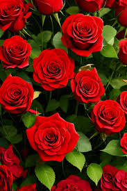
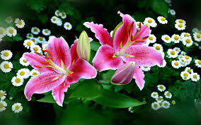

Flowers

A rose is either a woody perennial flowering plant of the genus Rosa in the family Rosaceae or the flower it bears. There are over three hundred species and tens of thousands of cultivars. They form a group of plants that can be erect shrubs, climbing, or trailing, with stems that are often armed with sharp prickles. Their flowers vary in size and shape and are usually large and showy, in colours ranging from white through yellows and reds.
The common sunflower (Helianthus annuus) is a species of large annual forb of the daisy family Asteraceae. The common sunflower is harvested for its edible oily seeds which are used in the production of cooking oil, as well as other uses such as food for livestock, bird food, and planting in domestic gardens for aesthetics. Wild plants are known for their multiple flower heads, whereas the domestic sunflower often possesses a single large flower head atop an unbranched stem.
 Taraxacum is a large genus of flowering plants in the family Asteraceae, which consists of species commonly known as dandelions. The scientific and hobby study of the genus is known as taraxacology. A single dandelion plant can produce over 5,000 seeds a year, traveling up to five miles from their origin. These seeds are uniquely designed for wind dispersal: each seed is attached to a parachute-like structure called a pappus, enabling it to drift on the breeze over considerable distances.
Taraxacum is a large genus of flowering plants in the family Asteraceae, which consists of species commonly known as dandelions. The scientific and hobby study of the genus is known as taraxacology. A single dandelion plant can produce over 5,000 seeds a year, traveling up to five miles from their origin. These seeds are uniquely designed for wind dispersal: each seed is attached to a parachute-like structure called a pappus, enabling it to drift on the breeze over considerable distances.

Lilium is a genus of herbaceous flowering plants growing from bulbs, all with large and often prominent flowers. They are the true lilies. Lilies are a group of flowering plants which are important in culture and literature in much of the world. Most species are native to the Northern Hemisphere and their range is temperate climates and extends into the subtropics. Many other plants have "lily" in their common names, but do not belong to the same genus and are therefore not true lilies. True lilies are known to be highly toxic to cat.